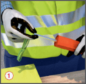
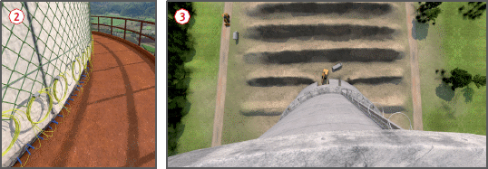

Durch Streuflug, Versager, unplanmäßiges Ein- oder Umstürzen von Bauwerken oder Bauwerksteilen sowie durch unzeitige Zündung von Sprengmitteln können Personen verletzt werden.

Allgemeines
Abbruchsprengungen nur von hierfür speziell ausgebildeten Sprengberechtigten ausführen lassen. Diese müssen aufgrund eines Erlaubnis- oder Befähigungsscheines nach Sprengstoffgesetz hierzu berechtigt sein.
Anzeigen der Sprengarbeiten bei der zuständigen Behörde.
Bei Sprengarbeiten ist der Sprengberechtigte allein verantwortlich und weisungsberechtigt.
Umgang mit Sprengstoffen und Zündmitteln ist nur dem Sprengberechtigten und seinen von ihm beaufsichtigten Hilfskräften gestattet.
Beim Einsatz mehrerer Sprengberechtigter bei einer Sprengung, einen Sprengberechtigten zur verantwortlichen Person bestellen.
Schutzmaßnahmen
Hilfskonstruktionen, erforderliche Gerüste und Aufstiege z. B. für Bohrarbeiten, für Einbringen der Ladungen und Anbringen von Abdeckungen vorsehen.
Bei Vorschwächungsmaßnahmen ist die Standsicherheit des Bauwerks bzw. von Bauteilen zu gewährleisten.
Bei Gefährdung durch herabfallende Teile, erschütterungsarm Bohren.
Mindestabstände zu elektrischen Anlage z. B. Bahnen, Freileitungen, Hochfrequenzanlagen ermitteln und einhalten.
Beim Umgang mit Sprengmittel an der Sprengstelle (Laden, Herstellen der Zündanlage etc.) sind Unbeteiligte fern zu halten sowie die entsprechenden Bereiche abzusperren.
Hautkontakt mit Sprengstoffen vermeiden! Schutzhandschuhe gemäß Gefährdungsbeurteilung und nach Vorgaben der Sprengstoffhersteller tragen .
Beim Umgang mit Sprengmitteln im Abstand von weniger als 25 m Entfernung nicht rauchen, kein offenes Licht oder Feuer verwenden sowie keine Schweiß-, Schneid- oder andere Funken reißende Arbeiten ausführen.
Sprengmittel vor, während und nach dem Laden sicher aufbewahren.
Sprengstellen, von denen Gefahren durch Streuflug ausgehen können, müssen mit geeigneten Materialien abgedeckt werden, z. B. Vliese, Maschendraht, Strohballen, Gummimatten .
Sprengbereich festlegen und absichern.

Alle Beteiligten sind über die Bedeutung der Sprengsignale zu unterrichten:
Sprengsignal = ein langer Ton
sofort Sprengbereich verlassen/in Deckung gehen.
Sprengsignal = zwei kurze Töne
es wird gezündet.
Sprengsignal = drei kurze Töne
das Sprengen ist beendet oder die Sprengarbeit ist unterbrochen und die Deckung darf verlassen werden.
Sprengsignale gegebenenfalls z. B. bei starken Umgebungsgeräuschen mit einem Drucklufthorn geben.
Sprengstellen erst wieder betreten, nachdem die Sprengschwaden abgezogen sind.
Die Sprengstelle erst nach Freigabe durch den Sprengberechtigten betreten.
Zusätzliche Hinweise zur Planung und Vorbereitung von Bauwerkssprengungen
Maßnahmen zur Verhinderung von Streuflug und zur Reduzierung von Staub und Erschütterungen festlegen.
Ermitteln einer evtl. Schadstoffbelastung des Bauwerks. Umfang der Schadstoffsanierung und Entkernung festlegen und notwendige Sanierungsmaßnahmen durchführen.
Beweissicherungsmaßnahmen an gefährdeten benachbarten Bauwerken treffen.
Erstellung eines Sprengplanes mit allen für die Sprengung benötigten Daten, z. B. Lademengenberechnungen, Zündplan und Bohrplan.
Festlegungen zur notwendigen Vorschwächung des Bauwerks treffen.
Gegebenenfalls Statiker für Bauwerkssprengungen hinzuziehen.
Fallrichtung des zu sprengenden Objektes und das dazu erforderliche Fallbett festlegen, hierbei Ausbreitung nach dem Aufprall berücksichtigen .
Zusätzliche Hinweise zum Verhalten bei Versagern
Nicht gezündete Sprengmittel/Versager dürfen nur durch den Sprengberechtigten beseitigt werden.
Gegebenenfalls ist ein Sachverständiger hinzuzuziehen.
Beschäftigte auf der Baustelle insbesondere über Maßnahmen beim Auffinden von Versagern unterweisen.
Werden Versager im Haufwerk vermutet, dieses nur unter Einhaltung besonderer Sicherheitsmaßnahmen wegladen z. B. Einsatz eines Ladegerätes mit splittergeschützter Fahrerkabine, vorsichtiges Wegladen, verstärktes Beobachten.
Gefundene Sprengstoffe, Zündmittel und Anzündmittel dem Sprengberechtigten unverzüglich anzeigen. Die Fundstelle beaufsichtigen und vom Sprengberechtigten auf weitere Versager hin untersuchen.
Prüfungen
Leistungsfähigkeit von Zündmaschinen durch den Sprengberechtigten regelmäßig prüfen. Die Festlegung der Prüffrist ergibt sich aus der Gefährdungsbeurteilung und sollte mindestens einmal monatlich bzw. bei längerer Nichtbenutzung vor der Wiederinbetriebnahme liegen.
Zündmaschinen, Zündgeräte und Zündkreisprüfer sind durch den Hersteller oder eine andere "zur Prüfung befähigte Person" zu prüfen. Die Prüffrist ergibt sich aus der Gefährdungsbeurteilung und sollte zwei Jahre nicht überschreiten.
Ergebnisse dokumentieren.
Arbeitsmedizinische Vorsorge
Arbeitsmedizinische Vorsorge nach Ergebnis der Gefährdungsbeurteilung veranlassen (Pflichtvorsorge) oder anbieten (Angebotsvorsorge). Hierzu Beratung durch den Betriebsarzt.
 .
. .
. .
.